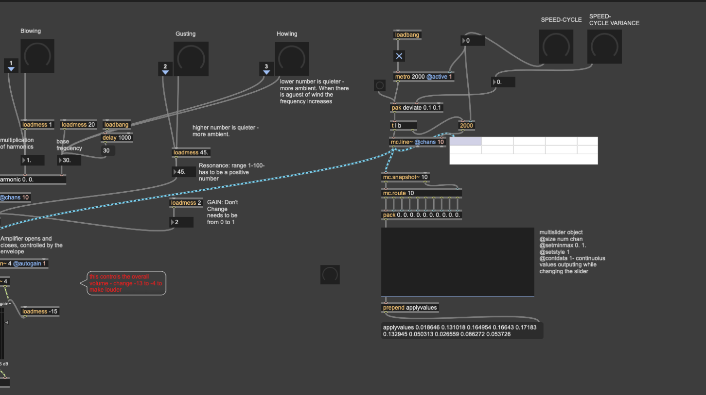
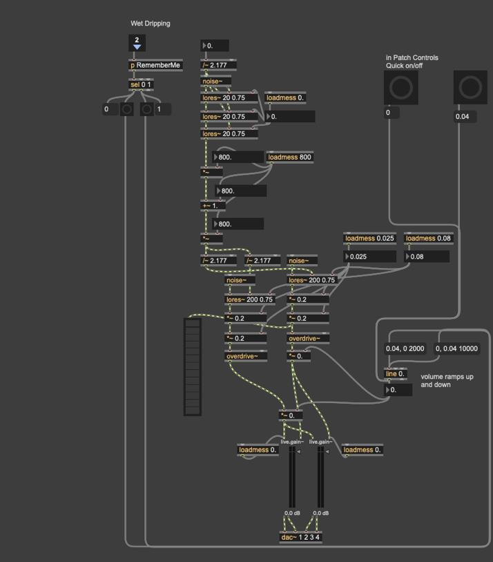
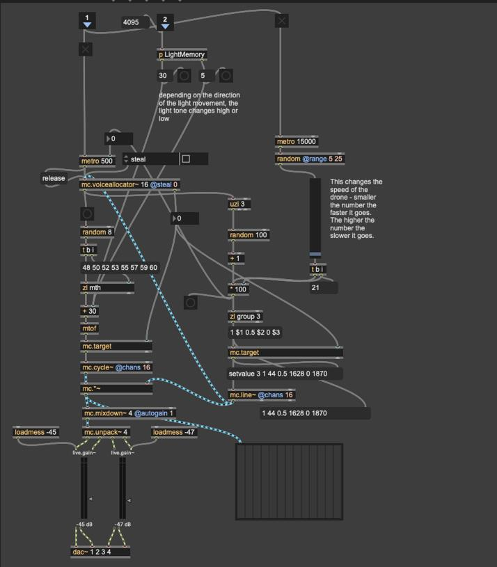
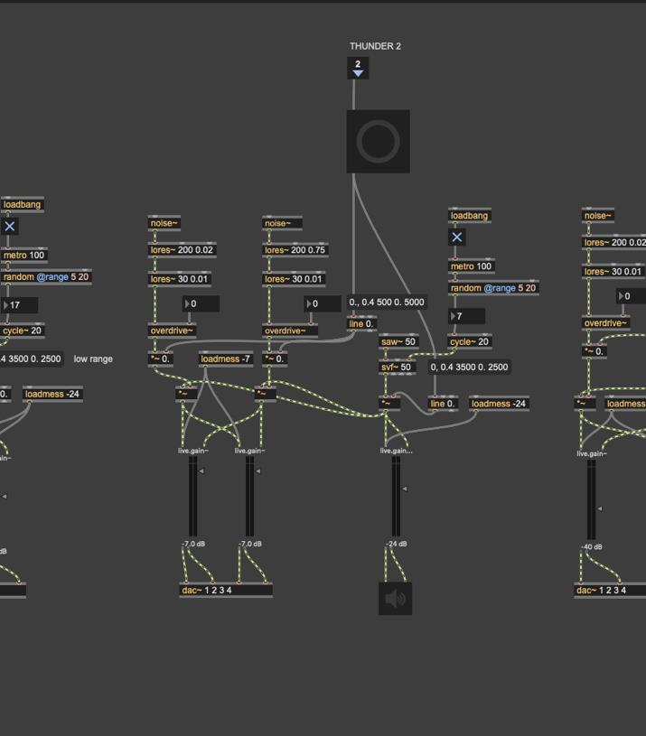
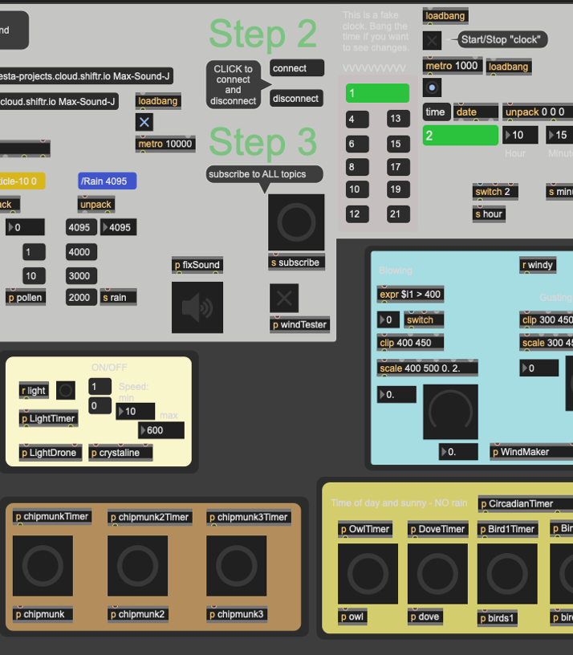

Environmental sound installation · 2025–ongoing
(ex)tending towards
01 / Project
A changing environmental dataset is synthesized into an evolving four-channel spatial composition.
Extending Towards is an ongoing interdisciplinary project initiated and directed by artist Jane Tingley in 2023, exploring environmental conditions through a networked IoT sensing infrastructure.
As a collaborator, I introduced and developed the project’s sound component during a 2025 sound residency at New Adventures in Sound Art.
- Role
- Sound synthesis, sonification, and quadraphonic composition
- Methods
- Max/MSP, IoT data, four-channel spatialization
- Created and directed by
- Jane Tingley





Listening to conditions
Air, wind, light, soil, temperature, and rain become a spatial field of sound.
All sounds are digitally synthesized in Max/MSP, with environmental measurements triggering and shaping sonic events spatialized across four channels.
The work has been exhibited at NAISA, Emerson Contemporary, and the Bradbury Art Museum at Arkansas State University.